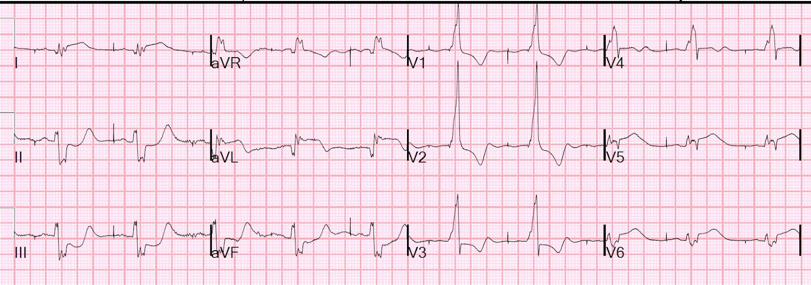
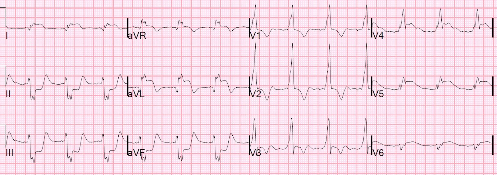
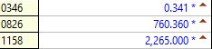
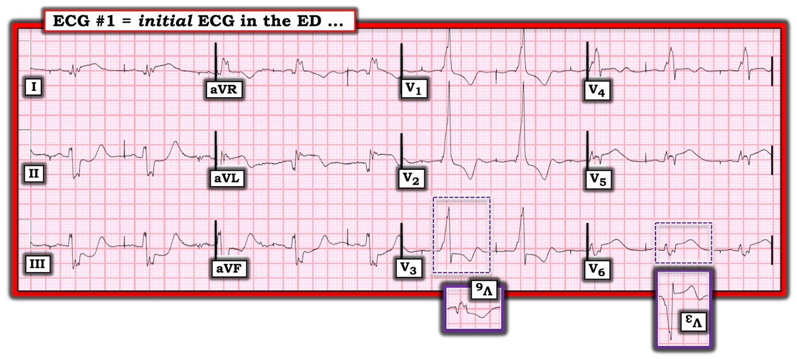

16/01/2020 — Động mạch gây nhồi máu là động mạch nào????? Và bạn đã bao giờ thấy troponin cao đến thế này chưa?
Bản dịch tiếng Việt của bài "What is the infarct artery????? And have you ever seen a troponin this high?" – Dr. Smith’s ECG Blog. Giữ nguyên toàn bộ 7 hình ảnh và 2 video của bản gốc.
Một bệnh nhân nữ cao tuổi có tiền sử đột quỵ và mất ngôn ngữ, được con gái nhận thấy có vẻ khác thường, và bà chỉ khắp người như thể đang bị đau.
Gia đình đã gọi 911.
Bà có tiền sử PCI động mạch mũ và hở van hai lá nặng, đã thay van sinh học. Ngoài ra còn tiền sử phình thất trái có huyết khối, đang dùng thuốc chống đông, và có máy tạo nhịp hai buồng.
Khi đến viện, huyết áp là 60/30.
Đây là điện tâm đồ ban đầu:


Có ST chênh lên (STE) ở I và aVL, V5, V6, với ST chênh xuống (STD) soi gương ở II, III, aVF
Có ST chênh xuống ngược hướng phù hợp ở V1-V3 (phù hợp với RBBB)
RBBB là mới xuất hiện và điện tâm đồ trước đó không có ST chênh lên
Động mạch gây nhồi máu là động mạch nào?
Phòng thông tim (cath lab) đã được kích hoạt.
Đây là siêu âm tim tại giường (POCUS): mặt cắt trục ngắn
Chức năng thất trái cực kỳ kém và rối loạn vận động thành trên diện rất rộng
Mặt cắt trục dọc
Chức năng thất trái cực kỳ kém và rối loạn vận động thành trên diện rất rộng
Dr. Dick Asinger và Gopal Punjabi (@spectralCT) cũng chỉ ra điều này:
Mặt cắt trục dọc cạnh ức không khó – có một giả phình thành dưới kèm huyết khối – nhiều khả năng do nhồi máu cũ vùng động mạch mũ.
Hãy xem chỗ phình lồi ra ở phía dưới hình.
Ở phút thứ 20, ngay trước khi thông tim, một điện tâm đồ khác được ghi:


Troponin I ban đầu của bà là 0.341 ng/mL (giới hạn trên tham chiếu (URL) = 0.030 ng/mL) (không phải tính theo L, không phải loại độ nhạy cao)
Lactat là 3.7 mEq/L
Với thuốc vận mạch, huyết áp của bà tăng lên 80, rồi 100.
Chụp mạch vành cho thấy tắc thân chung động mạch vành trái do huyết khối 99% với dòng chảy TIMI-1 (trường hợp này được coi là “tắc” dù vẫn còn một ít dòng chảy. Tổn thương được mở thông và đặt stent, sau đó đạt dòng chảy TIMI-3 (bình thường).
Stent ở LCX còn thông. OM1 bị tắc và OM2 hẹp 60%. RCA của bà là mạch cỡ trung bình, có các chỗ hẹp nối tiếp (tandem), ít nhất ở mức độ vừa, ở đoạn giữa.
Bệnh nhân được đặt bóng đối xung động mạch chủ (IABP).
Siêu âm tim sau thông tim:
độ dày thành thất trái và chức năng tâm thu giảm nặng.
Phân suất tống máu thất trái ước tính dưới 10 %.
Rối loạn vận động thành khu trú – thành trước, trước bên và dưới bên, vô động/loạn động.
Phình đoạn giữa của thành bên và thành dưới bên. Không có bằng chứng huyết khối thất trái, có thể.
Phân suất tống máu (EF) trước đây vốn đã thấp, ở mức 15%
Diễn biến troponin:


Con số này tương đương hơn 2 triệu ng/L.
Mức troponin I cao nhất mà tôi từng thấy trước ca này là 500 ng/mL.
Mức này cao gấp hơn 4 lần!
Một ổ nhồi máu khổng lồ
Tắc thân chung động mạch vành trái có thể biểu hiện bằng rất nhiều kiểu hình điện tâm đồ khác nhau. Đây là nhiều ví dụ khác:
How does acute left main occlusion present on the ECG? (Many example ECGs of true left main occlusion) (Tắc cấp thân chung động mạch vành trái biểu hiện thế nào trên điện tâm đồ? Nhiều ví dụ điện tâm đồ của tắc thân chung thật sự)
ST Elevation in Lead aVR, with diffuse ST depression, does not represent left main occlusion (ST chênh lên ở chuyển đạo aVR kèm ST chênh xuống lan tỏa không phải là biểu hiện của tắc thân chung động mạch vành trái)
ST-Elevation in aVR with diffuse ST-Depression: An ECG pattern that you must know and understand! (not left main occlusion (ST chênh lên ở aVR kèm ST chênh xuống lan tỏa: một hình ảnh điện tâm đồ bạn phải biết và hiểu! – không phải tắc thân chung)

===================================
BÌNH LUẬN CỦA TÔI, bởi KEN GRAUER, MD (16/1/2020):
===================================
Tôi đã không xác định đúng “động mạch thủ phạm” trong ca này. Khi không xác định được — tôi đã quay lại bài ngày 9 tháng Tám năm 2019 mà Dr. Smith dẫn trong phần bình luận ở trên. Đó là một bài đọc rất ấn tượng.
- Nhân viên y tế cấp cứu sẽ không thường xuyên gặp bệnh nhân bị tắc cấp thân chung động mạch vành trái (LMain) — đơn giản vì khả năng sống sót của hầu hết những bệnh nhân này rất hạn chế. Vì thời gian cho tới khi được điều trị là cực kỳ quan trọng — nên rất đáng để ôn lại những bài học rút ra về biểu hiện trên điện tâm đồ của bệnh nhân tắc cấp LMain.
Tôi đã tóm tắt những điểm chính từ bài ngày 9/8/2019 của Dr. Smith trong Hình 1. Những Điều cần nhớ MẤU CHỐT như sau:
- Không có một biểu hiện điện tâm đồ “duy nhất” nào cho bệnh nhân tắc cấp LMain. Theo đúng nghĩa đen — Bạn có thể thấy hầu như bất cứ thứ gì!
- Lý do của biểu hiện điện tâm đồ rất thay đổi này là nhiều vùng cơ tim có thể bị ảnh hưởng ở các mức độ khác nhau — khiến không thể dự đoán được bạn sẽ thấy ST chênh lên bao nhiêu — và ST chênh xuống ngược chiều (soi gương) sẽ làm giảm bớt (nếu không nói là triệt tiêu hoàn toàn) các lực vectơ đoạn ST ban đầu này đến mức nào.
- Hình ảnh ST-T ở chuyển đạo aVR có thể là bất cứ dạng nào khi có tắc cấp LMain.



Sau đó tôi xem lại điện tâm đồ ban đầu trong ca này ( = điện tâm đồ #1 trong Hình 2). Tôi ghi nhận những điều sau:
- Như Dr. Smith đã nêu — có tạo nhịp nhĩ, với các sóng P tạo nhịp được dẫn truyền dưới dạng RBBB. Còn có blốc phân nhánh trái trước (LAHB) (QRS chủ yếu âm ở mỗi chuyển đạo dưới).
- Phức bộ QRS kéo dài (tới hơn 0.16 giây) rõ rệt — kèm phân mảnh rõ và bất thường. Mức độ QRS kéo dài + phân mảnh như vậy xác định có bệnh tim nền nặng — điều này hoàn toàn không đáng ngạc nhiên khi xét tuổi cao của bệnh nhân + tiền sử bệnh mạch vành, bệnh van tim, tiền sử phình thất trái + tạo nhịp vĩnh viễn.
- Ngoài sự phân mảnh — còn có bằng chứng nhồi máu cũ dưới dạng sóng Q sâu và rộng ở các chuyển đạo bên cao I và aVL (phù hợp với tiền sử PCI vào LCx).
- Có gợi ý sóng q nhỏ ở đầu phức bộ tại chuyển đạo V1 và V2 — phù hợp với khả năng nhồi máu vách cũ.
Với tất cả các bằng chứng về bệnh tim nặng có sẵn từ trước như vậy — có thể rất khó khi nhìn vào điện tâm đồ ban đầu (khi không có bản ghi cũ) để xác định: Điều gì là Mới so với Cũ? Tôi ấn tượng bởi một số nhận xét mà tôi rút ra trong Hình 1:
- Hình dạng của sóng ST-T ở mỗi chuyển đạo dưới của điện tâm đồ #1 rõ ràng trông cấp tính! Hình ảnh “lõm” (scooping) mà ta thấy về phía cuối đoạn ST chênh xuống (đặc biệt ở chuyển đạo II và III) — rồi vút lên thành một sóng T lớn và nhọn ở phần cuối — đơn giản là không phải một dấu hiệu tồn tại lâu dài.
- Hình ảnh ST-T ngược chiều gần như soi gương ở chuyển đạo aVL (so với chuyển đạo III) + ST chênh lên ~2mm tại điểm J kèm ST thẳng đuỗn ở các chuyển đạo bên khác (tức là chuyển đạo I, V5, V6) — gợi ý tắc LCx (động mạch mũ trái — Left Circumflex) — nhưng TẠI SAO lại có thay đổi soi gương ở thành dưới nhiều đến thế?
- Như Dr. Smith đã nêu — ST-T chênh xuống thấy ở chuyển đạo V1 và V2 hoàn toàn phù hợp với ngược hướng phù hợp do RBBB. NHƯNG — VẬY TẠI SAO lại có ST chênh xuống tại điểm J nhiều hơn ở chuyển đạo V3 (trong hình chữ nhật chấm chấm màu TÍM) so với ở chuyển đạo V1 và V2 — vốn là những chuyển đạo thường cho thấy ngược hướng phù hợp rõ nhất khi chỉ có RBBB đơn thuần?
- Tôi chú ý đến hình dạng của sóng ST-T chênh xuống ở chuyển đạo V3. Chẳng phải hình dạng của sóng ST-T chênh xuống này ở chuyển đạo V3 (trong hình chữ nhật chấm chấm màu TÍM) gần như là hình soi gương ngược chiều của hình dạng ST-T chênh lên mà ta thấy ở các chuyển đạo ngực bên V5 và V6? (Hãy so sánh hình soi gương của các sóng ST-T này ở chuyển đạo V3 và V6 trong các ô nhỏ viền màu TÍM).
Tổng hợp lại tất cả: Tôi hoàn toàn thừa nhận rằng tôi đã không dự đoán được tắc cấp LMain là “động mạch thủ phạm” trong ca này. Dù vậy — xét các mối liên hệ được Dr. Smith tóm tắt trong Hình 1 — những gì ta thấy ở điện tâm đồ #1 có thể phù hợp với một số dấu hiệu điện tâm đồ của tắc cấp LMain:
- Blốc hai phân nhánh mới xuất hiện (RBBB/LAHB).
- Thay đổi STEMI cấp rõ rệt ở không dưới 4 chuyển đạo bên.
- Thay đổi ST-T soi gương rõ rệt một cách không tương xứng ở tất cả các chuyển đạo dưới.
- Có thể có sự triệt tiêu giữa các lực ngược hướng nhau ở các chuyển đạo trước V1 và V2. Tôi sẽ không kỳ vọng ST chênh xuống tại điểm J ở chuyển đạo V3 nhiều hơn ở V1 và V2 (cũng như không kỳ vọng hình ảnh ST-T ngược chiều kiểu soi gương ở chuyển đạo V3 so với chuyển đạo V5 và V6) — trừ khi một phần ST chênh lên ở thành trước do tắc cấp LMain đang bị triệt tiêu bớt bởi tổn thương cấp tính thành sau.